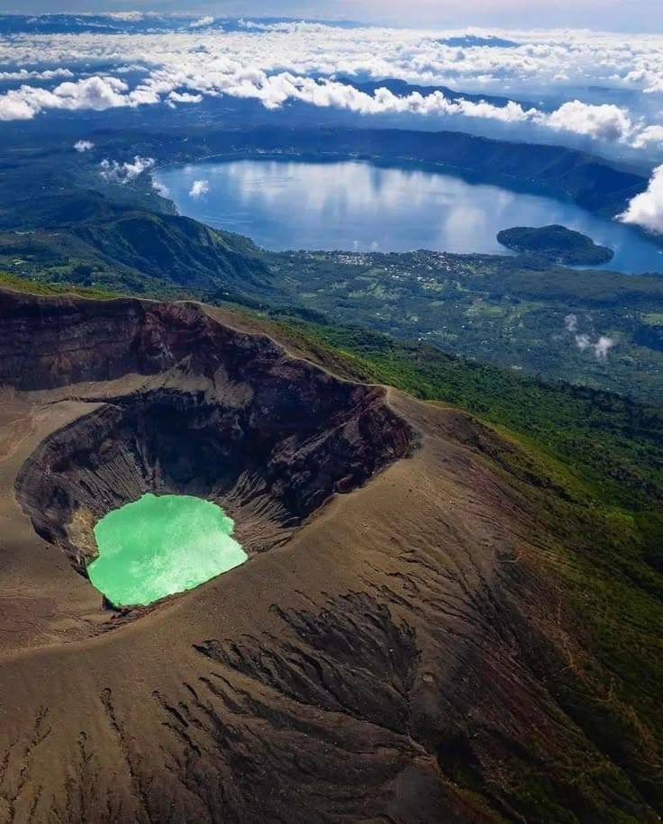
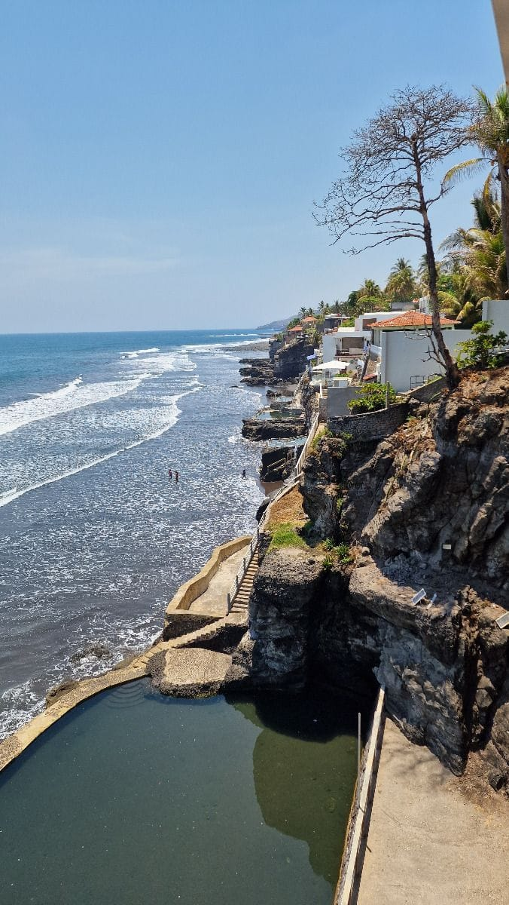
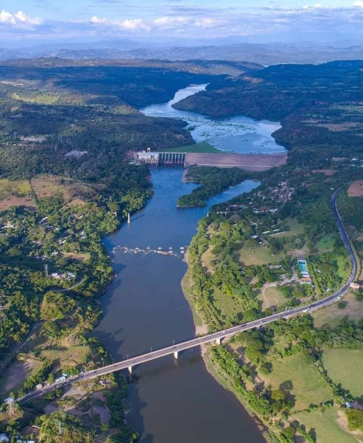
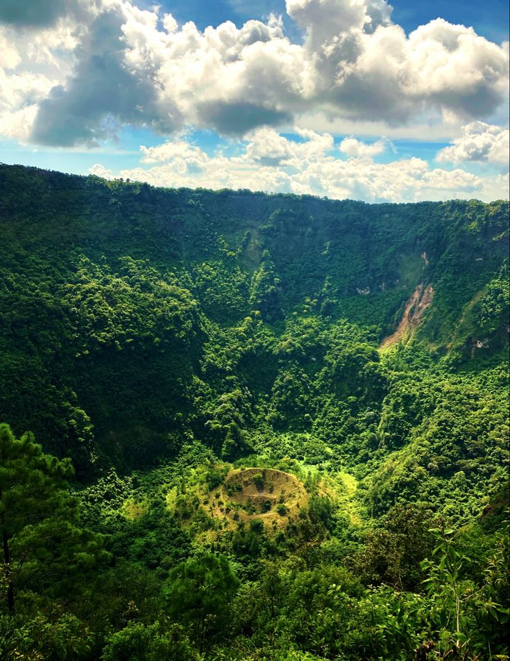

Volcán de Santa Ana
Punto más alto
El volcán activo más alto de El Salvador, conocido por su hermoso lago de cráter de color turquesa.


Un viaje a través de los variados y hermosos paisajes de nuestra tierra.

Punto más alto
El volcán activo más alto de El Salvador, conocido por su hermoso lago de cráter de color turquesa.

Surf & Playas
Conocido por sus zonas de surf de clase mundial, formaciones rocosas como El Tunco y una vibrante cultura costera.

Vía fluvial principal
El río más grande e importante de El Salvador, crucial para la agricultura y la energía hidroeléctrica.

Ecosistemas diversos
El cerro El Pital es la montaña más alta y una reserva de bosque nuboso con flora y fauna únicas.